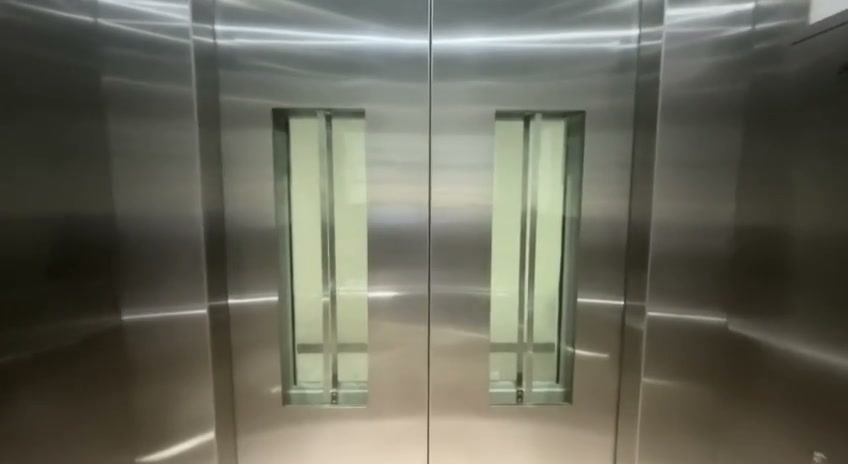
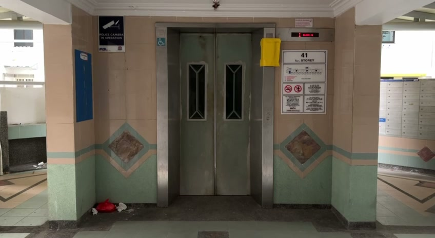
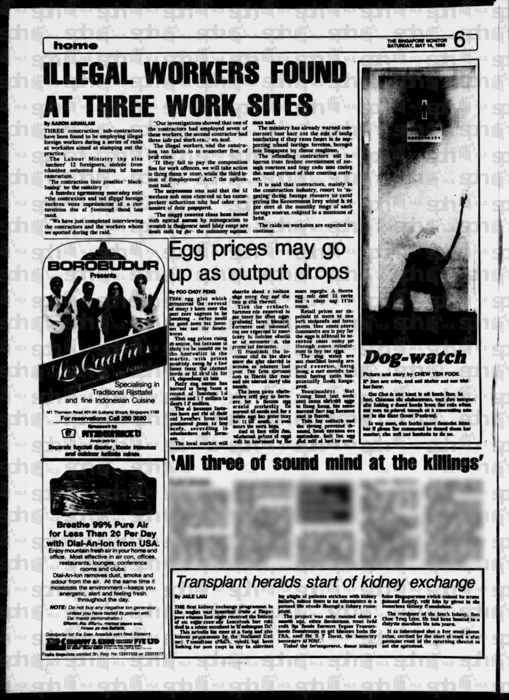

You expect the familiar landing, but the images from the post are still with you.
Look around. Papers, openings and gates may hold something.
This view could not load. Please try again.
Loading the image…
This scene could not load. You can go back or try again.
Your phone rings.
The call snaps you out of the imagined corridor. Your wife’s name lights up the screen.
“So, what do you think of the house? Can you see us living there? Should we buy it?”
The call brings your visit to a close. You leave the block with your own impression of what makes a place a home.
Submitting your response…
You did not record any evidence during your visit.